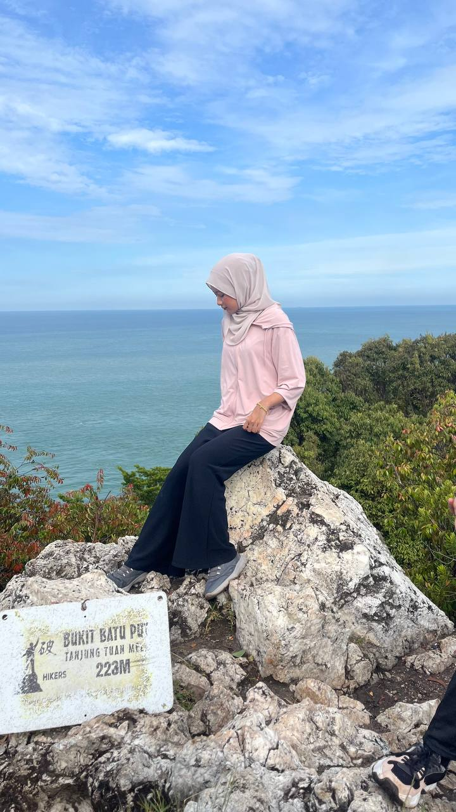
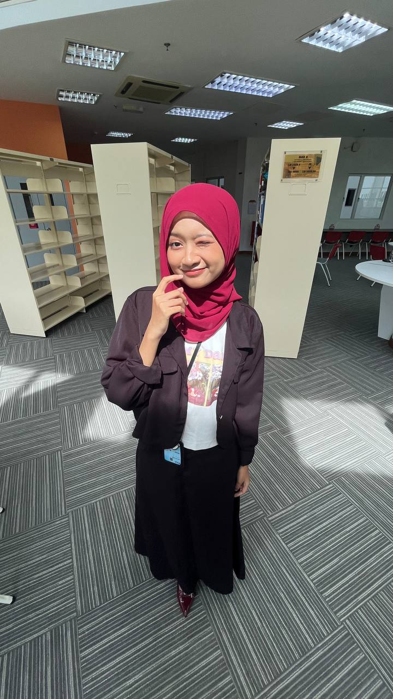
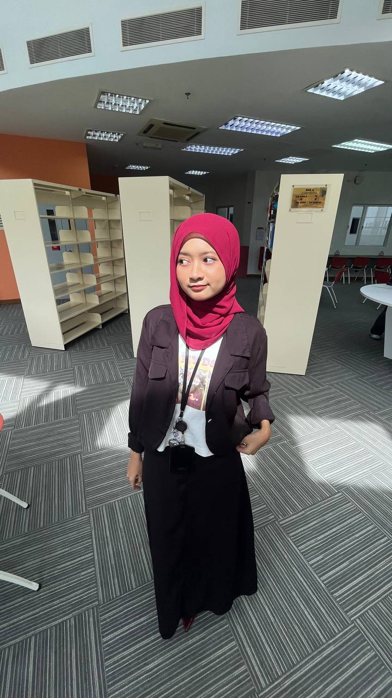
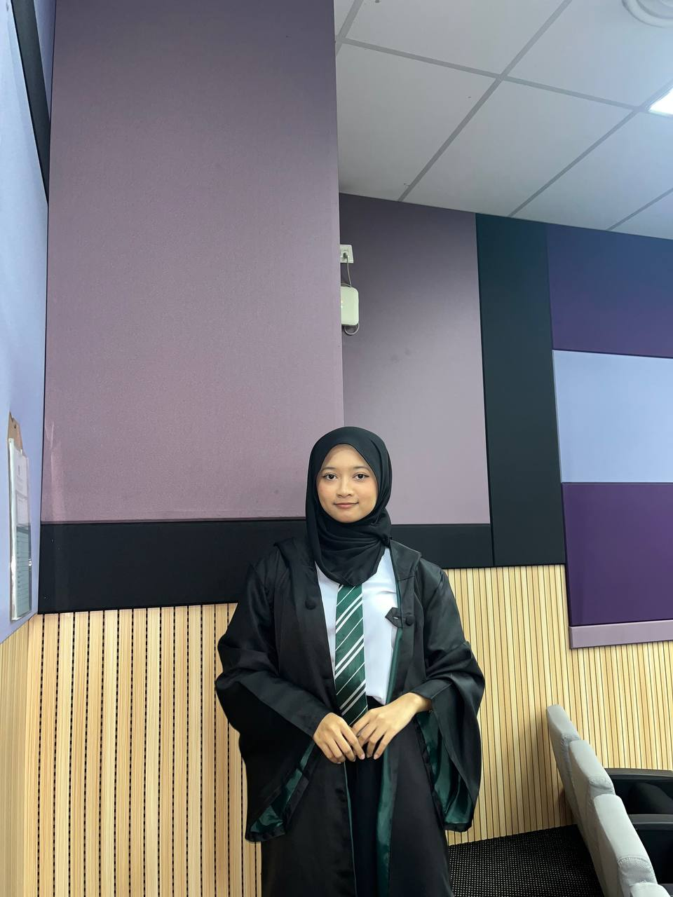

Explore moments and memories that shaped my journey.Take a deeper journey through the moments and memories that have shaped and defined my path, reflecting the experiences, lessons, and milestones that have guided me to where I am today.



